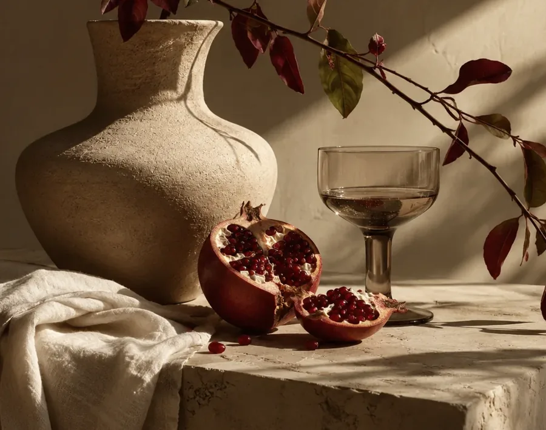
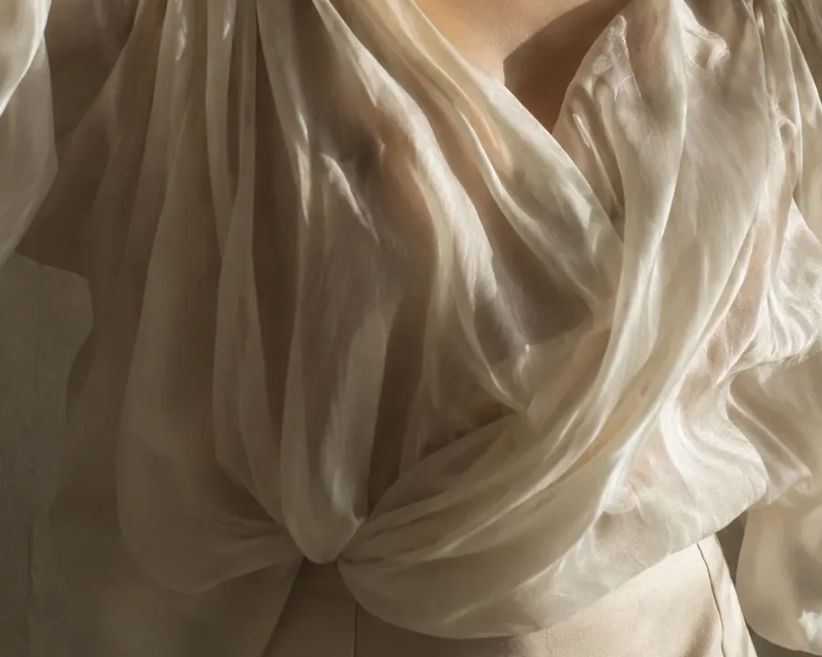
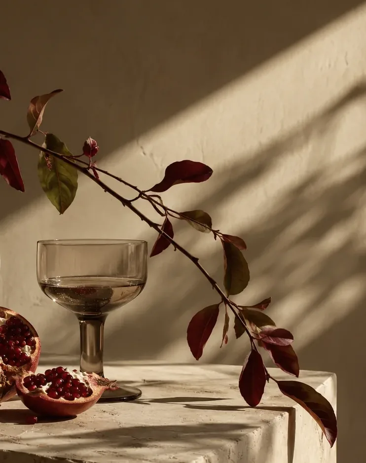
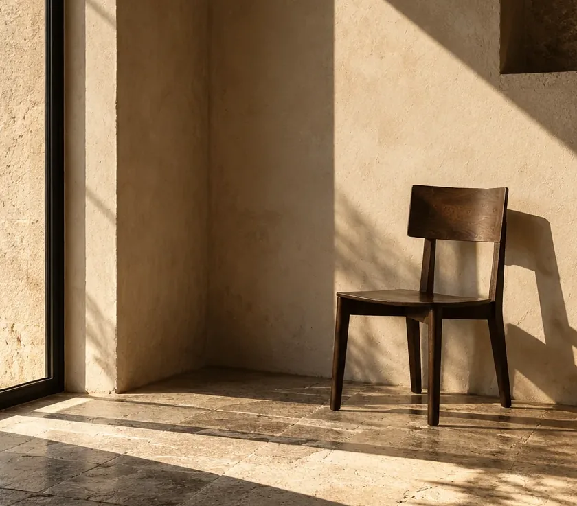

Movement lives here. ↗
On the small choreography of a hand, a garment, a body in a room.
A studio for the overlooked.
The ordinary, observed differently.
Three photographic studies examining gesture, arrangement and the in-between spaces of everyday life.

Portrait, still life, and architectural observation—different subjects connected by the same attention to light, framing and atmosphere.
Nothing is still when you
learn how to observe.
On the small choreography of a hand, a garment, a body in a room.

Flowers, glass, textured paper and the deliberate act of putting things together.

Unoccupied spaces in which light itself becomes the subject.
02 / THE STUDIO'S POINT OF VIEW
Photography is not just what the lens captures. It is what the photographer chooses to pay attention to.
Sometimes it is a fold in a sleeve, a stem leaning toward the light, or the empty chair you almost passed.
The studio approach ↗Across each series, an image can function as a statement, a detail, or a pause. Scale and sequence do much of the storytelling.



The other half lives in the decision: what enters the frame, what remains outside it, and where the next image begins.



THREE SUBJECTS / ONE SYSTEM OF ATTENTION — CROPS ARE DERIVED FROM THE ORIGINAL ILLUSTRATIVE SCENES
A complete 24-page editorial document with three photographic chapters, typographic interludes, contact sheets, and a quiet, deliberate pace.
Open the editorial collection ↗Six distinct posters developed from the same photography and editorial system. These are concept artworks, not installed campaigns or verified press outputs.


Social compositions, story treatments and a responsive studio announcement extend the identity without simply resizing a poster.